경영지도사-1차-1교시 (2022-04-23 기출문제)
1과목: 중소기업관련법령
1. 중소기업기본법령상 중소기업 옴부즈만에 관한 설명으로 옳은 것은?
- 중소기업 옴부즈만의 임기는 3년으로 하되, 두 번까지 연임할 수 있다.
- 중소벤처기업부장관은 중소기업 옴부즈만에 대하여 사무 처리나 필요한 경비를 지원할 수 없다.
- 중소기업 옴부즈만은 장기간의 심신쇠약으로 직무를 수행할 수 없게 된 경우에도 그 의사에 반하여 해촉될 수 없다.
- 중소기업 옴부즈만은 업무 수행의 내용과 그 처리결과를 공표할 수 있지만, 「공공기관의 정보공개에 관한 법률」에 따른 비공개 대상에 해당하는 경우에는 그러하지 아니하다.
- 중소기업 옴부즈만은 지방의회의원의 직을 겸할 수 있다.
(정답률: 알수없음)

2. 중소기업기본법령상 용어와 그 뜻의 연결이 옳지 않은 것은?
- 유한회사의 임원 - 이사(사외이사를 포함)
- 법인인 기업의 합병일 또는 분할일 - 합병 또는 분할로 설립된 법인의 설립등기일이나 합병 또는 분할 후 존속하는 법인의 변경등기일
- 주식등 - 주식회사의 경우에는 발행주식(의결권이 없는 주식은 제외) 총수, 주식회사 외의 기업인 경우에는 출자총액
- 법인인 기업의 창업일 - 법인설립등기일
- 친족 - 배우자(사실상 혼인관계에 있는 자를 포함), 6촌 이내의 혈족 및 4촌 이내의 인척
(정답률: 알수없음)
3. 중소기업제품 구매촉진 및 판로지원에 관한 법률상 중소벤처기업부장관이 직접생산 확인을 받은 중소기업자에 대하여 조사한 결과 그 중소기업자가 받은 모든 제품에 대한 직접생산 확인을 취소하여야 하는 경우를 모두 고른 것은? (단, 업무의 위탁은 고려하지 않음)
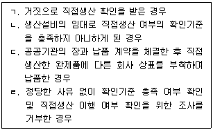
- ㄱ, ㄴ, ㄷ
- ㄱ, ㄴ, ㄹ
- ㄱ, ㄷ, ㄹ
- ㄴ, ㄷ, ㄹ
- ㄱ, ㄴ, ㄷ, ㄹ
(정답률: 알수없음)
4. 중소기업제품 구매촉진 및 판로지원에 관한 법령상 중소기업제품의 성능인증에 관한 설명으로 옳은 것은?
- 성능인증을 받은 제품이 성능인증 기준에 맞지 아니하게 된 경우 중소벤처기업부장관은 인증을 취소하여야 한다.
- 성능인증을 받지 아니한 자가 제품에 중소벤처기업부령으로 정하는 성능인증의 표지를 사용하면 과태료의 부과 대상이 된다.
- 중소벤처기업부장관은 국가기관 소속 시험기관에게 제품의 성능 차별성 검증을 위한 적합성 심사를 대행하게 할 수 있다.
- 성능인증의 유효기간은 성능인증을 받은 날부터 1년으로 한다.
- 거짓으로 성능인증을 받아 그 성능인증이 취소된 자는 취소된 날부터 1년간 성능인증을 신청할 수 없다.
(정답률: 알수없음)
5. 벤처기업육성에 관한 특별조치법상 벤처기업의 주식매수선택권에 관한 정관의 규정에 포함하여야 하는 사항으로 규정된 것이 아닌 것은?
- 주식매수선택권의 행사로 내줄 주식의 종류와 수
- 주식매수선택권을 부여받을 자의 자격 요건
- 주식매수선택권의 행사 가격
- 주식매수선택권의 행사 기간
- 일정한 경우 주식매수선택권의 부여를 이사회의 결의에 의하여 취소할 수 있다는 뜻
(정답률: 알수없음)
6. 벤처기업육성에 관한 특별조치법상 벤처기업 소규모 합병의 특례 규정의 일부이다. ( )에 들어갈 숫자는?
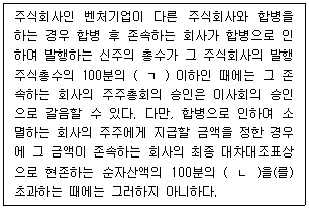
- ㄱ: 10, ㄴ: 5
- ㄱ: 20, ㄴ: 5
- ㄱ: 20, ㄴ: 10
- ㄱ: 30, ㄴ: 5
- ㄱ: 30, ㄴ: 10
(정답률: 알수없음)
7. 벤처기업육성에 관한 특별조치법령상 벤처기업의 해당 여부 확인에 관한 설명으로 옳은 것은?
- 벤처기업확인서의 유효기간은 확인일부터 2년으로 한다.
- 벤처기업확인기관의 장은 벤처기업 확인의 투명성을 확보하기 위하여 대표자의 주민등록번호 등 확인된 벤처기업에 관한 정보를 공개할 수 있다.
- 벤처기업확인기관의 장은 확인에 소요되는 비용을 벤처기업 확인을 요청하려는 자에게 부담하게 하여서는 아니 된다.
- 확인 결과를 통지받은 자가 그 결과에 불복하는 경우에는 통지받은 날부터 30일 이내에 벤처기업확인기관의 장에게 문서로 이의신청을 할 수 있다.
- 확인에 대하여 「행정심판법」에 따른 행정심판을 청구하는 경우 벤처기업의 확인에 대한 감독행정기관은 벤처기업확인기관의 장으로 한다.
(정답률: 알수없음)
8. 중소기업진흥에 관한 법령상 명문장수기업이 될 수 있는 업종은?
- 건설업
- 금융업
- 보험 및 연금업
- 부동산업
- 출판업
(정답률: 알수없음)
9. 중소기업진흥에 관한 법률상 중소벤처기업부장관이 사업의 효율적 수행을 위하여 전담기관을 지정할 수 있도록 규정된 사업은?
- 협업지원사업
- 입지 지원사업
- 지도와 연수사업
- 국제화 지원사업
- 환경오염 저감 지원사업
(정답률: 알수없음)
10. 중소기업진흥에 관한 법령상 중소벤처기업진흥채권(이하 '채권'이라 함)에 관한 설명으로 옳지 않은 것은?
- 중소벤처기업진흥공단은 이사회의 의결을 거쳐 중소벤처기업부장관의 승인을 받아 중소벤처기업창업 및 진흥기금의 부담으로 채권을 발행할 수 있다.
- 채권의 발행액은 적립된 중소벤처기업창업 및 진흥기금의 20배를 초과할 수 없다.
- 채권은 기명식으로 하되, 응모자나 소지인이 청구하는 경우에는 무기명식으로 할 수 있다.
- 채권의 소멸시효는 상환일부터 기산하여 원금은 5년, 이자는 2년으로 완성된다.
- 중소벤처기업진흥공단은 채권을 발행할 때 실제로 응모된 총액이 채권청약서에 적힌 채권발행 총액에 미치지 못하는 경우에도 채권을 발행한다는 뜻을 채권청약서에 표시할 수 있다.
(정답률: 알수없음)
11. 중소기업 기술혁신 촉진법령상 기술혁신형 중소기업에 관한 설명으로 옳지 않은 것은?
- 중소벤처기업부장관은 기술혁신형 중소기업 육성사업을 추진하는 경우 비수도권 지역의 기술혁신형 중소기업을 발굴ㆍ육성하기 위하여 노력하여야 한다.
- 중소벤처기업부장관은 기술혁신촉진지원사업을 추진하는 경우 기술혁신형 중소기업에 대하여 우선적으로 지원할 수 있다.
- 중소벤처기업부장관은 기술혁신형 중소기업으로 선정받으려는 기업에 평가 등에 소요되는 비용을 부담하게 할 수 있다.
- 중소벤처기업부장관은 기술혁신형 중소기업 육성사업을 추진하는 기관 또는 단체에 필요한 비용의 전부를 출연할 수는 없다.
- 중소벤처기업부장관이 실시하는 기술혁신형 중소기업에 관한 실태조사에는 기술혁신형 중소기업의 성장 장애요인에 관한 사항이 포함되어야 한다.
(정답률: 알수없음)
12. 중소기업 기술혁신 촉진법령상 기술료 징수에 관한 내용이다. ( )에 들어갈 숫자는?
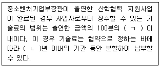
- ㄱ: 30, ㄴ: 3
- ㄱ: 30, ㄴ: 5
- ㄱ: 50, ㄴ: 5
- ㄱ: 50, ㄴ: 10
- ㄱ: 70, ㄴ: 10
(정답률: 알수없음)
13. 중소기업 기술혁신 촉진법상 제재부가금을 부과할 수 있는 경우는?
- 정당한 사유 없이 연구개발 과제의 수행을 포기한 경우
- 출연금을 연구개발비의 연구용도 외의 용도로 사용한 경우
- 거짓이나 그 밖의 부정한 방법으로 연구개발을 수행한 경우
- 정당한 사유 없이 연구개발 결과물인 지식재산권을 소속 임직원의 명의로 등록한 경우
- 연구개발의 결과가 극히 불량하여 중소벤처기업부장관이 실시하는 평가에 따라 실패한 사업으로 결정된 경우
(정답률: 알수없음)
14. 벤처투자 촉진에 관한 법령상 전문개인투자자의 등록 자격을 갖춘 사람에 해당하지 않는 것은?
- 「세무사법」에 따라 등록한 세무사
- 경상계열의 박사학위를 소지한 사람
- 「공인회계사법」에 따라 등록한 공인회계사
- 「국가기술자격법」에 따라 기술사 자격을 취득한 사람
- 「경영지도사 및 기술지도사에 관한 법률」에 따라 등록한 경영지도사
(정답률: 알수없음)
15. 벤처투자 촉진에 관한 법령상 창업기획자에 관한 설명으로 옳지 않은 것은?
- 「상법」에 따른 회사가 창업기획자로 등록을 하려면 그 자본금이 1억원 이상이어야 한다.
- 법인의 임원이 「유사수신행위의 규제에 관한 법률」을 위반하여 벌금 이상의 형을 선고받고 그 집행이 끝나거나 집행이 면제된 날부터 5년이 지나지 아니하였다면 그 법인은 창업기획자로 등록을 할 수 없다.
- 창업기획자로 등록을 하려는 자는 창업기획자와 투자자 간, 특정 투자자와 다른 투자자 간의 이해상충을 방지하기 위한 체계를 갖추어야 한다.
- 창업기획자는 벤처투자조합의 지분을 취득하거나 소유하여서는 아니 된다.
- 담보권 실행으로 비업무용부동산을 취득한 창업기획자는 1년 내에 이를 처분하여야 한다.
(정답률: 알수없음)
16. 벤처투자 촉진에 관한 법령상 중소기업창업투자회사에 관한 설명으로 옳지 않은 것은?
- 중소벤처기업부장관은 경영건전성 기준을 갖추지 못한 중소기업창업투자회사에 대하여 자본금의 증액, 이익 배당의 제한 등 경영 개선을 위하여 필요한 조치를 요구할 수 있다.
- 중소기업창업투자회사가 갖추어야 하는 “경영건전성 기준”이란 자본잠식률이 50퍼센트 미만일 것을 말한다.
- 경영건전성 기준을 갖추지 못하여 중소벤처기업부장관으로부터 경영 개선 조치를 요구 받은 중소기업창업투자회사는 그 내용을 공시하여야 한다.
- 중소기업창업투자회사가 그 사업수행에 필요한 재원을 충당하기 위하여 「상법」에 따른 사채를 발행하려면 중소벤처기업부장관의 승인을 받아야 한다.
- 중소기업창업투자회사는 매 사업연도 종료 후 3개월 이내에 결산서에 회계법인의 감사의견서를 첨부하여 중소벤처기업부장관에게 제출해야 한다.
(정답률: 알수없음)
17. 소상공인 보호 및 지원에 관한 법령상 중소벤처기업부장관이 행정적ㆍ재정적 지원을 할 수 있는 소상공인공동물류센터(이하 '물류센터'라 함)에 관한 설명으로 옳지 않은 것은?
- 종합 소매업을 주된 업종으로 영위하는 소매업자 50인 이상이 공동으로 건립하여 운영하는 물류센터는 지원 대상이 될 수 있다.
- 물류센터는 소상공인의 연간 매출액 규모를 기준으로 소상공인의 회원 가입을 제한할 수 있다.
- 물류센터가 소상공인의 물류체계 현대화를 위하여 수행하는 사업에는 상품의 전시도 포함된다.
- 물류센터는 화물의 운송ㆍ보관ㆍ하역과 관련된 가공ㆍ조립ㆍ분류ㆍ수리ㆍ포장ㆍ상표부착ㆍ판매ㆍ정보통신 등의 활동을 위한 시설을 갖추어야 한다.
- 물류센터 건립ㆍ운영 지원 사업을 위하여 소상공인시장진흥기금을 사용할 수 있다.
(정답률: 알수없음)
18. 소상공인 보호 및 지원에 관한 법률상 소상공인연합회(이하 '연합회'라 함)에 관한 설명으로 옳지 않은 것은?
- 연합회는 법인 아닌 사단으로 한다.
- 지방자치단체의 장은 소상공인을 육성하고 지역 사회를 개발하기 위하여 관할 구역에 있는 연합회 지회의 운영에 필요한 경비의 일부를 연합회를 통하여 보조할 수 있다.
- 소상공인을 위한 조직화 지원사업은 연합회의 사업에 해당한다.
- 지방자치단체는 연합회가 소상공인의 구매 및 판매 등에 관한 공동사업을 수행하는데 필요한 비용을 지원할 수 있다.
- 중소벤처기업부장관은 연합회의 업무가 정관에 위반된다고 인정되는 경우에는 기한을 정하여 업무의 시정을 명할 수 있고, 연합회가 그 명령에 따르지 아니하면 임원의 해임을 명할 수 있다.
(정답률: 알수없음)
19. 소상공인 보호 및 지원에 관한 법률상 소상공인시장진흥기금을 사용할 수 있는 사업으로 명시되지 않은 것은?
- 소상공인의 세무ㆍ회계 처리 지원
- 폐업 소상공인에 대한 취업 지원
- 소상공인 과밀 업종의 사업전환 지원
- 소상공인을 위한 방송 운영
- 소상공인에 대한 건강보험료의 지원
(정답률: 알수없음)
20. 중소기업 인력지원 특별법령상 인력고도화계획의 시행에 드는 경비의 일부를 정부가 지원할 수 있는 요건으로 옳은 것을 모두 고른 것은?
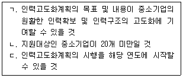
- ㄱ
- ㄴ
- ㄱ, ㄷ
- ㄴ, ㄷ
- ㄱ, ㄴ, ㄷ
(정답률: 알수없음)
21. 중소기업 인력지원 특별법상 성과보상기금을 조성하는 재원으로 명시되지 않은 것은?
- 「공공자금관리기금법」에 따른 공공자금관리기금으로부터의 예수금(預受金)
- 중소기업 청년근로자 및 핵심인력이 납부하는 공제납입금
- 성과보상기금의 관리 및 운용에 필요한 차입금
- 성과보상기금의 운용으로 발생하는 수익금
- 중소기업 또는 그 밖의 자의 출연금
(정답률: 알수없음)
22. 중소기업 인력지원 특별법상 중소기업 근로자의 장기재직 지원에 관한 규정의 일부이다. ( )에 들어갈 숫자는?
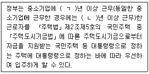
- ㄱ: 3, ㄴ: 2
- ㄱ: 5, ㄴ: 3
- ㄱ: 7, ㄴ: 5
- ㄱ: 10, ㄴ: 5
- ㄱ: 10, ㄴ: 7
(정답률: 알수없음)
23. 중소기업 사업전환 촉진에 관한 특별법령상 사업전환계획 승인에 관한 설명으로 옳은 것은? (단, 업무의 위탁은 고려하지 않음)
- 중소벤처기업부장관은 승인신청서를 받은 경우 해당 사업장에 대한 현장 조사가 필요하지 않다고 판단되더라도 현장 조사를 생략할 수 없다.
- 승인기업이 사업전환계획을 중단하려면 중소벤처기업부장관에게 통지하여야 한다.
- 승인기업이 승인을 받은 날부터 6개월 이내에 정당한 이유 없이 사업전환계획을 추진하지 아니하는 경우 중소벤처기업부장관은 승인을 취소해야 한다.
- 승인기업이 거짓으로 승인을 받은 경우 중소벤처기업부장관은 승인을 취소하여야 하며, 이 경우 청문을 할 필요는 없다.
- 중소벤처기업부장관은 승인이 취소된 경우 그 사실을 관계 기관에 통보하여야 할 의무는 없다.
(정답률: 알수없음)
24. 소상공인기본법령상 소상공인이 규모의 확대 등으로 소상공인에 해당하지 아니하게 되었더라도 그 사유가 발생한 연도의 다음 연도부터 3년간은 소상공인으로 보는 경우(소상공인 지위 유지)가 아닌 것을 모두 고른 것은?
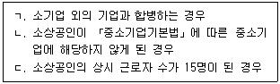
- ㄱ
- ㄷ
- ㄱ, ㄴ
- ㄴ, ㄷ
- ㄱ, ㄴ, ㄷ
(정답률: 알수없음)
25. 소상공인기본법상 소상공인정책심의회의 심의ㆍ조정사항으로 명시되지 않은 것은?
- 소상공인과 관련된 제도 및 법령에 관한 사항
- 해당 연도 시행계획의 수립 및 전년도 시행계획의 실적 및 성과의 평가에 관한 사항
- 위원장이 소상공인 보호ㆍ육성 정책에 관하여 심의에 부치는 사항
- 둘 이상의 중앙행정기관이 관련된 주요 소상공인 보호ㆍ육성 정책의 조정에 관한 사항
- 소상공인 간 분쟁의 중재에 관한 사항
(정답률: 알수없음)
2과목: 경영학
26. 다음 내용과 관련된 유용한 재무정보의 질적특성은?
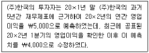
- 목적적합성
- 표현충실성
- 이해가능성
- 적시성
- 비교가능성
(정답률: 알수없음)
27. 재무제표 표시에 관한 설명으로 옳지 않은 것은?
- 재무제표 이외의 보고서는 한국채택국제회계기준의 적용범위에 해당하지 않는다.
- 한국채택국제회계기준에 따라 작성된 재무제표는 공정하게 표시된 재무제표로 본다.
- 부적절한 회계정책은 이에 대하여 공시나 주석 또는 보충 자료를 통해 설명하더라도 정당화될 수 없다.
- 각각의 재무제표는 전체 재무제표에서 동등한 비중으로 표시한다.
- 모든 재무제표는 발생기준 회계를 사용하여 작성한다.
(정답률: 알수없음)
28. (주)한국이 20×1년 말 현재 다음과 같은 자산을 보유하고 있다면, 20×1년도 말 재무상태표에 표시할 현금및현금성자산의 금액은?
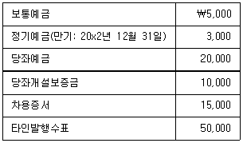
- ￦50,000
- ￦75,000
- ￦78,000
- ￦88,000
- ￦103,000
(정답률: 알수없음)
29. 유형자산으로 분류되지 않는 항목은?
- 보안경비 회사의 업무용 차량
- 동물원의 관람용 동물
- 회사의 본사 건물
- 통상적인 영업과정 외에 타인에게 임대하기 위해서 보유 중인 토지
- 리스회사의 임대용 차량운반구
(정답률: 알수없음)
30. 다음은 20×3년 12월 31일 현재 (주)한국의 차입금 관련 내역이다. ㈜한국의 20×3년도 말 재무상태표에 유동부채로 보고되어야 할 금액은?
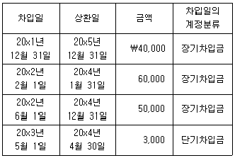
- ￦50,000
- ￦110,000
- ￦113,000
- ￦115,000
- ￦153,000
(정답률: 알수없음)
31. 다음 자료를 이용하여 계산한 (주)한국의 20×1년도 당기순이익은? (단, 재무제표에 대한 결산 승인은 차기 3월에 개최된 주주총회에서 이루어진다.)
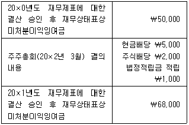
- ￦18,000
- ￦26,000
- ￦36,000
- ￦37,000
- ￦45,000
(정답률: 알수없음)
32. (주)한국의 20×2년 초 매출채권에 대한 손실충당금(대손충당금) 잔액은 ￦50,000이다. 20×2년에 매출채권 중 ￦60,000이 회수가 불가능할 것으로 판단하여 장부에서 제거하였다. 20×2년 말 현재 매출채권 총액은 ￦100,000이며, 동 매출채권에 대해 추정된 기대신용손실은 ￦5,000이다. 20×2년도 포괄손익계산서에 반영할 손상차손(대손상각비)은?
- ￦5,000
- ￦7,000
- ￦8,000
- ￦10,000
- ￦15,000
(정답률: 알수없음)
33. (주)한국이 (주)대한으로부터 선적지 인도조건으로 외상매입한 원가 ￦2,000의 상품이 20×1년 12월 31일 현재 운송 중에 있다. 해당 상품거래를 장부에 반영하지 않은 20×1년 말 (주)한국의 유동자산과 유동부채는 각각 ￦10,000과 ￦6,000이다. 상기 미착품이 장부에 반영된 이후 20×1년 말 (주)한국의 유동비율은?
- 80 %
- 120 %
- 150 %
- 167 %
- 200 %
(정답률: 알수없음)
34. 다음 중 집합손익 계정으로 집합(대체)되는 계정은?
- 미수수익
- 선급비용
- 미지급비용
- 이자비용
- 선수수익
(정답률: 알수없음)
35. (주)한국은 20×1년 7월 1일에 기계장치를 ￦20,000에 취득하여 즉시 사용하기 시작하였다. 동 기계장치의 내용연수는 10년이고 잔존가치는 없다고 추정하였다. (주)한국은 기계장치를 정액법으로 감가상각하다가 20×3년 초부터 감가상각 방법을 이중체감법으로 변경하였다. (주)한국의 20×3년도 기계장치의 감가상각비는?
- ￦1,000
- ￦2,000
- ￦3,000
- ￦4,000
- ￦8,000
(정답률: 알수없음)
36. 재무보고를 위한 개념체계에서 재무제표 작성을 위한 기본가정으로 제시하고 있는 것은?
- 계속기업
- 발생기준
- 청산기준
- 화폐단위측정
- 기간별보고
(정답률: 알수없음)
37. 다음 중 금융부채로 분류할 수 없는 것은?
- 미지급비용
- 선수수익
- 장기차입금
- 미지급금
- 매입채무
(정답률: 알수없음)
38. 도소매업을 영위하는 (주)한국의 20×1년도 기말상품재고(단일품목)의 실제 수량은 600개이며, 개당 취득원가는 ￦300이다. 20×1년 말 현재 기말재고의 예상 판매가격은 개당 ￦290이다. 기말재고수량 중 200개는 확정판매계약을 이행하기 위하여 보유하고 있으며, 확정판매계약의 계약가격은 개당 ￦280이다. 확정판매계약에 따른 판매의 경우에는 판매비용이 발생하지 않으나, 그 외 시장을 통해 판매하는 경우에는 개당 ￦20의 판매비용이 발생한다. (주)한국이 20×1년도에 인식할 재고자산평가손실은? (단, 20×1년도 기초의 재고자산평가충당금은 없다.)
- ￦0
- ￦6,000
- ￦12,000
- ￦16,000
- ￦18,000
(정답률: 알수없음)
39. (주)한국은 20×1년 1월 1일부터 신기술의 연구개발활동을 시작하여 20×1년 6월 30일에 개발에 성공하였으며, 20×1년 7월 1일부터 해당 신기술을 실제 생산에 적용하기 시작하였다. 20×1년 1월 1일부터 20×1년 6월 30일까지 발생한 동 신기술 관련 연구개발 지출 내역은 다음과 같다.
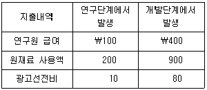
(주)한국이 상기 신기술 관련 개발비(무형자산)를 내용연수 5년, 잔존가치 없이 정액법으로 상각한다고 할 때, (주)한국이 20×1년도에 인식할 개발비 상각비는? (단, 개발단계에서 발생한 지출은 무형자산의 인식조건을 모두 충족하며, (주)한국은 모든 무형자산에 대해 원가모형을 적용하고 있다.)
- ￦130
- ￦138
- ￦145
- ￦160
- ￦260
(정답률: 알수없음)
40. (주)한국은 20×1년 1월 1일 액면금액 ￦100,000, 액면이자율 연 10 %(매년 말 이자지급), 만기 3년인 회사채를 ￦95,196에 발행하고 상각후원가측정금융부채로 분류하였다. 사채발행 당시의 유효이자율은 연 12 %이다. (주)한국이 20×1년 7월 1일에 동 사채를 ￦110,000(경과이자 포함)에 조기 상환하였다고 할 때, (주)한국이 20×1년도에 인식할 사채상환손실은? (단, 이자는 월할계산하며, 단수차이로 인한오차가 있다면 가장 근사치를 선택한다.)
- ￦4,292
- ￦5,000
- ￦9,092
- ￦10,000
- ￦14,092
(정답률: 알수없음)
41. (주)한국의 20×1년도 기초자본과 기말자본은 각각 ￦1,000과 ￦1,500이다. 20×1년도 기중에 (주)한국은 유상증자 ￦150, 무상증자 ￦100, 현금배당 ￦50, 주식배당 ￦20을 하였다. 20×1년도 (주)한국의 당기순이익이 ￦200일 경우, (주)한국의 20×1년도 포괄손익계산서상 기타포괄이익은?
- ￦100
- ￦120
- ￦200
- ￦220
- ￦300
(정답률: 알수없음)
42. (주)한국은 20×1년 1월 1일 원가 ￦20,000의 상품을 3년간 매년 말에 ￦10,000씩 총 3회에 걸쳐 분할 회수하는 조건으로 할부매출하였다. 이 거래에는 유의적인 금융요소가 포함되어 있으며, 계약할인율은 연 10 %로 이는 계약 개시 시점에 (주)한국과 고객이 별도 금융거래를 한다면 반영하게 될 할인율에 해당한다. 상기 할부매출거래가 (주)한국의 20×1년도 당기순이익에 미치는 영향은? (단, 대금의 회수는 확실하며, 이자율 10 %, 3기간 정상연금 ￦1의 현가계수는 2.4868이다. 또, 단수차이로 인한 오차가 있다면 가장 근사치를 선택한다.)
- ￦10,000 감소
- ￦4,868 증가
- ￦7,355 증가
- ￦10,000 증가
- ￦24,868 증가
(정답률: 알수없음)
43. 관계기업과 종속기업에 대한 투자와 관련된 설명으로 옳은 것은?
- 지분투자결과 투자회사가 유의적인 영향력을 행사할 수 있게 된 피투자회사를 종속기업이라고 부른다.
- 유의적인 영향력은 상대적인 소유지분율의 변동에 따라 투자회사의 소유지분율이 변동하는 경우에만 상실된다.
- 지분법을 적용한 재무제표는 별도재무제표가 될 수 없다.
- 지분법은 지분(투자자산)을 최초로 취득한 때에는 원가로 인식하고, 취득시점 이후 발생한 피투자자의 순자산 변동액 중 투자자의 몫을 해당 투자자산에 가감하여 보고하는 회계처리 방법이다.
- 피투자회사에 대한 지분율이 20 % 이상인 경우에만 피투자회사를 종속기업으로 분류한다.
(정답률: 알수없음)
44. 다음 중 중소기업회계기준에 관한 설명으로 옳은 것은?
- 시장가격이 있는 유가증권을 포함한 모든 유가증권의 취득원가에는 거래원가를 포함한다.
- 주식의 발행금액이 액면금액보다 큰 경우 발행금액과 액면금액의 차액을 이익잉여금으로 회계처리한다.
- 자본잉여금이나 이익잉여금을 자본금에 전입하여 주주에게 무상으로 신주를 발행하는 경우에는 발행시점에 추정한 주식의 공정가치를 주식의 발행금액으로 한다.
- 금융리스이용자는 최소리스료를 리스제공자의 증분차입이자율로 할인한 금액을 금융리스부채로 인식한다.
- 정부보조금은 해당 보조금에 부수되는 조건을 준수하고, 이를 수취할 것이라는 확신이 있을 때 인식한다.
(정답률: 알수없음)
45. 회계감사에 관한 설명으로 옳지 않은 것은?
- 회계감사의 목적은 의도된 재무제표이용자의 신뢰수준을 향상시키는 것이며, 이 목적은 재무제표가 해당 재무보고체계에 따라 중요성 관점에서 공정하게 표시되어 있는지에 대해 감사인이 의견을 표명함으로써 달성된다.
- 회계감사는 재무보고의 성격, 감사절차의 성격상 감사인의 감사증거 입수능력의 한계 등에 따라 고유한계를 지닌다.
- 재무제표에 대한 감사인의 의견이 기업의 향후 존속가능성이나 장래전망을 보장하는 것은 아니다.
- 감사인은 기업의 재무제표가 해당 재무보고체계에 따라 공정하게 작성되었다고 판단할 때 적정의견을 표명한다.
- 모든 주권상장법인은 매 사업연도 개시일부터 45일 이내에 당 사업연도의 감사인을 선임하여야 한다.
(정답률: 알수없음)
46. (주)한국은 보조부문과 제조부문을 이용하여 제품을 생산하고 있으며, 관련 자료는 다음과 같다.
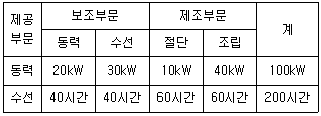
동력부문과 수선부문에 집계된 부문원가는 각각 ￦80,000, ￦70,000이다. (주)한국은 단계배분법을 사용하여 보조부문원가를 제조부문에 배분한다. 절단부문에 배부될 보조부문원가는? (단, 보조부문원가는 동력부문의 원가를 먼저 배분한다.)
- ￦45,000
- ￦60,000
- ￦75,000
- ￦90,000
- ￦1⑤,000
(정답률: 알수없음)
47. (주)한국은 표준원가계산제도를 사용한다. 다음은 (주)한국의 20×1년 4월 중 표준원가 및 생산활동 자료이다.
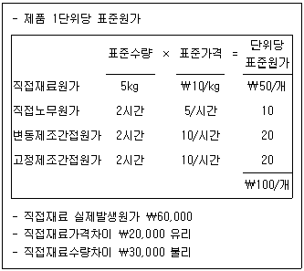
(주)한국의 20×1년 4월 실제 제품생산량은? (단, 기초 및 기말 재고자산은 없는 것으로 가정한다.)
- 1,000개
- 1,500개
- 2,000개
- 2,200개
- 3,000개
(정답률: 알수없음)
48. 원가-조업도-이익(CVP) 분석의 기본가정에 관한 설명으로 옳은 것은?
- 단위당 판매가격은 수요와 공급의 원리에 따라 판매량을 증가시키기 위해서는 낮추어야 한다고 가정한다.
- 제품의 종류가 복수일 경우에는 조업도의 변동에 따라 매출배합이 달라진다.
- 원가행태는 관련 범위 내에서 곡선이다.
- 조업도에 해당하는 제품의 생산량과 판매량은 일치하는 것으로 가정한다.
- 수익과 원가에 영향을 미치는 요소로 조업도 이외에도 다른 요소들 예를 들면, 원재료의 가격과 품질, 작업자의 기술수준 등에 의해 영향을 받는 것으로 가정한다.
(정답률: 알수없음)
49. (주)한국은 제품 A와 B를 생산ㆍ판매하고 있다. 회사는 추가적인 설비투자를 고려하지 않고 있으며, 제품 A와 B의 생산 및 판매 관련 자료는 다음과 같다.
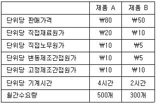
(주)한국이 사용할 수 있는 총기계시간은 월간 2,000시간이다. (주)한국이 영업이익을 극대화할 수 있는 제품배합은?
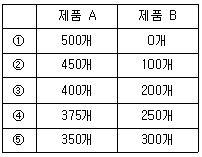
- ①
- ②
- ③
- ④
- ⑤
(정답률: 알수없음)
50. (주)한국은 사업부 A와 B로 구성되어 있다. 사업부 A는 부품을 생산하여 이를 외부에 판매하거나 사업부 B에 내부대체할 수 있으며, 사업부 B도 사업부 A의 부품을 내부대체 받거나 외부에서 구입할 수 있다. 사업부 A에서 생산하는 부품한 단위의 생산 및 외부판매에 소요되는 원가는 아래와 같다.
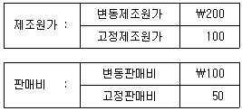
사업부 A는 부품을 생산하여 외부에 단위당 ￦400에 1,000단위를 판매하고 있다. 사업부 A는 사업부 B로부터 부품 200단위에 대해 내부대체 요청을 받았으며, 내부대체할 경우 변동판매비 ￦100을 모두 절약할 수 있다. 사업부 A의 최대생산능력이 1,000단위일 경우, 사업부 A가 사업부 B에 요구할 수 있는 최소대체가격은?
- ￦200
- ￦250
- ￦300
- ￦350
- ￦400
(정답률: 알수없음)
3과목: 회계학개론
51. 행동주의 경영이론에 관한 설명 중 옳지 않은 것은?
- 호손(Hawthorne)실험의 주된 목적은 과학적 관리법의 유효성을 실제로 검증하는 것이다.
- 호손실험으로 비공식 집단의 중요성이 밝혀졌다.
- 매슬로우(A. Maslow)의 욕구단계설은 인간의 5가지 욕구가 계층화되어 있다고 주장한다.
- 아지리스(C. Argyris)는 미성숙단계의 특성으로 수동성, 단기적 안목, 다양한 행동양식 등을 제시한다.
- 맥그리거(D. McGregor)는 X이론에서 감시와 통제를 통해 종업원을 관리해야 한다고 주장한다.
(정답률: 알수없음)
52. 수학적 모델을 기초로 선형계획법과 같은 계량적 방법을 이용하여 조직 내 문제를 해결하고자 하는 경영이론은?
- 시스템이론
- 상황이론
- XY이론
- Z이론
- 경영과학이론
(정답률: 알수없음)
53. '지주회사(holding company)에 의한 주식 소유'와 같은 형태의 기업집중은?
- 카르텔(cartel)
- 트러스트(trust)
- 콘체른(Konzern)
- 콤비나트(Kombinat)
- 조인트 벤처(joint venture)
(정답률: 알수없음)
54. 여러 자산에 분산투자하는 목적은?
- 자본비용 감소
- 자본조달 용이
- 투자비용 감소
- 투자위험 감소
- 거래비용 감소
(정답률: 알수없음)
55. 자기자본과 부채와의 구성 비율로서 기업의 타인자본 의존도를 나타내는 것은?
- 유동성 비율
- 레버리지 비율
- 활동성 비율
- 수익성 비율
- 시장가치 비율
(정답률: 알수없음)
56. '과업을 올바르게 수행하는 것(doing things right)'을 의미하는 개념은?
- 유효성
- 적합성
- 효과성
- 창조성
- 효율성
(정답률: 알수없음)
57. 다음 투자안의 순현재가치(NPV)는?
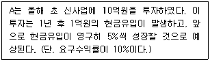
- 0원
- 1억원
- 5억원
- 10억원
- 20억원
(정답률: 알수없음)
58. 막스 베버(M. Weber)가 주장한 관료조직의 특징으로 옳은 것을 모두 고른 것은?
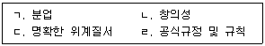
- ㄱ, ㄴ
- ㄷ, ㄹ
- ㄱ, ㄷ, ㄹ
- ㄴ, ㄷ, ㄹ
- ㄱ, ㄴ, ㄷ, ㄹ
(정답률: 알수없음)
59. 목표관리(MBO)에 관한 설명으로 옳지 않은 것은?
- 구체적이면서 실행 가능한 목표를 세운다.
- 부하는 상사와 협의하지 않고 목표를 세운다.
- 목표의 달성 기간을 구체적으로 명시한다.
- 성과에 대한 정보를 피드백한다.
- 업무수행 후 부하가 스스로 평가하여 그 결과를 보고한다.
(정답률: 알수없음)
60. 조직구조에 관한 설명으로 옳은 것은?
- 위원회 조직구조는 의사결정을 빠르게 하고 책임소재를 분명히 한다는 장점이 있다.
- 네트워크 조직구조는 핵심 이외의 사업을 외주화하기 때문에 외부환경의 변화에 민활하게 대응할 수 있다.
- 매트릭스 조직구조는 업무 수행자의 기능 및 제품에 대한 책임 규명이 쉽다는 장점이 있다.
- 사업부 조직구조는 각 사업부 간의 전문성 교류를 원활하게 함으로써 규모의 경제를 실현하게 한다.
- 기능적 조직구조는 전문화보다 고객 요구에 대한 대응을 더 중요시한다.
(정답률: 알수없음)
61. 실무에 종사하고 있는 직원들에게 시험문제를 풀게 하여 측정한 결과와 그들이 현재 수행하고 있는 직무와의 상관관계를 나타내는 타당도는?
- 현재타당도(concurrent validity)
- 예측타당도(predictive validity)
- 구성타당도(construct validity)
- 내용타당도(content validity)
- 외적타당도(external validity)
(정답률: 알수없음)
62. 경영통제와 관련된 설명으로 옳은 것은?
- 생산수량, 불량률, 비용 등은 산출표준에 해당한다.
- PERT, 재무상태분석 등은 재무통제에 해당한다.
- 원재료, 재공품은 재고통제 대상이 아니다.
- 재무상태표상의 유동자산을 유동부채로 나눈 것을 당좌비율이라고 한다.
- 문제가 발생하기 전에 취하는 관리적인 행동을 동시통제(concurrent control)라고 한다.
(정답률: 알수없음)
63. 동기부여에 관한 설명으로 옳지 않은 것은?
- 매슬로우(A. Maslow)의 욕구단계이론에서 자아실현욕구는 결핍-충족의 원리가 적용되지 않는다.
- 맥클리랜드(D. McClelland)의 성취동기이론에서 권력욕구가 강한 사람은 타인에게 영향력을 행사하고, 인정받는 것을 좋아한다.
- 브룸(V. Vroom)의 기대이론에서 기대감, 수단성, 유의성 등이 중요한 동기부여 요소이다.
- 알더퍼(C. Alderfer)의 ERG이론에서 관계욕구와 성장욕구가 동시에 발현될 수 있다.
- 스키너(B. Skinner)의 강화이론에서 비난, 징계 등과 같은 불쾌한 자극을 제거함으로써 바람직한 행동을 강화하는 것을 소거(extinction)라고 한다.
(정답률: 알수없음)
64. 집단의사결정기법에 관한 설명으로 옳은 것은?
- 브레인스토밍(brainstorming)은 새로운 아이디어에 대하여 무기명 비밀투표로 서열을 정한다.
- 지명반론자법(devil's advocate method)은 구성원들이 여러 이해관계자를 대표하여 토론하는 방법이다.
- 델파이법(Delphi method)은 전문가들의 면대면 토론을 통해 최적 대안을 선정한다.
- 변증법적토의법(dialectical inquiry model)은 구성원들이 대안에 대하여 공개적으로 찬성 혹은 반대하는 것을 금한다.
- 명목집단법(nominal group technique)은 대안의 우선순위를 정하기 전에 구두로 지지하는 이유를 설명하는 것을 허용한다.
(정답률: 알수없음)
65. 사이먼(H. Simon)의 제한된 합리성 모델(bounded rationality model)의 특성으로 옳은 것은?
- 만족해 선택
- 대안에 대한 완벽한 정보
- 우선순위 불변
- 경제적 인간 가정
- 실행 과정과 결과에 대한 완벽한 지식
(정답률: 알수없음)
66. 거래특유자산(transaction specific asset)에 대한 투자가 커서 거래상대방의 기회주의적인 행동이 우려될 때 취하는 기업 수준의 전략은?
- 제휴전략
- 벤치마킹전략
- 수직적통합전략
- 제품수명주기전략
- 비관련다각화전략
(정답률: 알수없음)
67. 기업전략에 관한 설명으로 옳지 않은 것은?
- BCG 매트릭스에서 성장은 느리지만 시장점유율이 높아서 이익이 많이 나는 집단을 별(star)이라고 한다.
- 포터(M. Porter)의 집중화전략은 한정된 특수 고객층에 집중하여 원가우위전략 혹은 차별화전략을 쓰는 것을 말한다.
- 포터(M. Porter)의 차별화전략은 품질이나 디자인이 뛰어난 만큼 비용이 많이 든다.
- SWOT분석은 외부환경의 기회와 위협, 내부환경의 강점과 약점을 분석한다.
- 자원기반관점(resource-based view)에서는 기업이 통제하는 자원과 역량이 경쟁우위의 원천이 된다.
(정답률: 알수없음)
68. 통계적 품질관리(statistical quality control) 기법에 해당하지 않는 것은?
- 관리도
- 파레토도표
- 표본검사
- QC 써클(circle)
- 도수분포
(정답률: 알수없음)
69. 반제품에 대한 수요 패턴 및 재고통제에 관한 설명으로 옳은 것은?
- 독립적인 재고수요를 따른다.
- 경제적 주문량에 따라 주문을 하여 재고를 통제한다.
- 자재소요계획을 이용한 단위주문량에 의해 재고를 통제한다.
- 수요를 파악하기 위해 정교한 예측 기법을 사용한다.
- 수요의 발생 원천이 회사의 통제권 밖에 있기 때문에 기업에서 관리하는 것은 불가능하다.
(정답률: 알수없음)
70. 네트워크 전송 중 지켜야 할 규칙과 데이터 포맷을 상세화한 표준은?
- 프로토콜(protocol)
- 패킷 교환(packet switching)
- 토폴로지(topology)
- 라우터(router)
- 허브(hub)
(정답률: 알수없음)
71. 다양한 업무 데이터베이스로부터 정보를 모아 비즈니스 분석활동과 의사결정 업무를 지원하는 것은?
- 자료중심적 웹사이트(data-focused website)
- 데이터웨어하우스(data warehouse)
- 비즈니스 프로세스 관리시스템(business process management system)
- 의사결정지원시스템(decision support system)
- 관리통제시스템(managerial control system)
(정답률: 알수없음)
72. 전자상거래에 있어서 차세대 결제수단인 전자화폐의 장점을 모두 고른 것은?
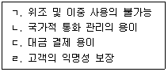
- ㄱ, ㄴ
- ㄷ, ㄹ
- ㄱ, ㄷ, ㄹ
- ㄴ, ㄷ, ㄹ
- ㄱ, ㄴ, ㄷ, ㄹ
(정답률: 알수없음)
73. 다음과 같은 제품개발이 의미하는 혁신 형태는?
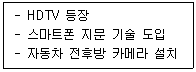
- 파괴적 혁신
- 점진적 혁신
- 디자인 혁신
- 사업 혁신
- 조직 혁신
(정답률: 알수없음)
74. 가격 결정의 주요 목표로 옳지 않은 것은?
- 시장 침투
- 수익의 안정
- 제품의 판매 촉진
- 경쟁에 대한 대응 및 예방
- 신제품 개발 역량 촉진
(정답률: 알수없음)
75. 기업이 성공하기 위해서 경쟁이 없는 새로운 시장을 창출해야 한다는 전략은?
- 침투 전략(penetration strategy)
- 레드오션 전략(red ocean strategy)
- 블루오션 전략(blue ocean strategy)
- 창조 전략(creation strategy)
- 표적시장 전략(target market strategy)
(정답률: 알수없음)